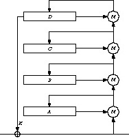
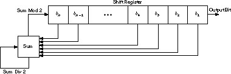
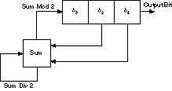
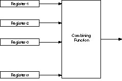
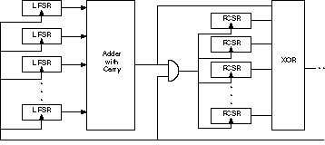
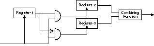
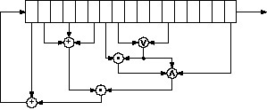
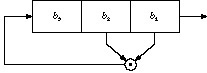
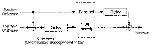
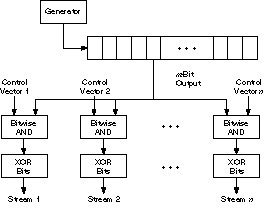

Chapter 17
Other Stream Ciphers and Real Random-Sequence Generators
17.1 RC4
RC4 is a variable-key-size stream cipher developed in 1987 by Ron Rivest for RSA Data Security, Inc. For seven years it was proprietary, and details of the algorithm were only available after signing a nondisclosure agreement.
In September, 1994 someone posted source code to the Cypherpunks mailing list — anonymously. It quickly spread to the Usenet newsgroup sci.crypt, and via the Internet to ftp sites around the world. Readers with legal copies of RC4 confirmed compatibility. RSA Data Security, Inc. tried to put the genie back into the bottle, claiming that it was still a trade secret even though it was public; it was too late. It has since been discussed and dissected on Usenet, distributed at conferences, and taught in cryptography courses.
RC4 is simple to describe. The algorithm works in OFB: The keystream is independent of the plaintext. It has a 8 * 8 S-box: S0, S1, ..., S255. The entries are a permutation of the numbers 0 through 255, and the permutation is a function of the variable-length key. It has two counters, i and j, initialized to zero.
To generate a random byte, do the following:
i = (i + 1) mod 256 j = (j + Si) mod 256 swap Si and Sj t = (Si + Sj) mod 256 K = St
The byte K is XORed with the plaintext to produce ciphertext or XORed with the ciphertext to produce plaintext. Encryption is fast — about 10 times faster than DES.
Initializing the S-box is also easy. First, fill it linearly: S0 = 0, S1 = 1, ..., S255 = 255. Then fill another 256-byte array with the key, repeating the key as necessary to fill the entire array: K0, K1, ..., K255. Set the index j to zero. Then:
for i = 0 to 255: j = (j + Si + Ki) mod 256 swap Si and Sj
And that’s it. RSADSI claims that the algorithm is immune to differential and linear cryptanalysis, doesn’t seem to have any small cycles, and is highly nonlinear. (There are no public cryptanalytic results. RC4 can be in about 21700 (256! × 2562) possible states: an enormous number.) The S-box slowly evolves with use: i ensures that every element changes and j ensures that the elements change randomly. The algorithm is simple enough that most programmers can quickly code it from memory.
It should be possible to generalize this idea to larger S-boxes and word sizes. The previous version is 8-bit RC4. There’s no reason why you can’t define 16-bit RC4 with a 16 * 16 S-box (100K of memory) and a 16-bit word. You’d have to iterate the initial setup a lot more times — 65,536 to keep with the stated design — but the resulting algorithm should be faster.
RC4 has special export status if its key length is 40 bits or under (see Section 13.8). This special export status has nothing to do with the secrecy of the algorithm, although RSA Data Security, Inc. has hinted for years that it does. The name is trademarked, so anyone who writes his own code has to call it something else. Various internal documents by RSA Data Security, Inc. have not yet been made public [1320,1337].
So, what’s the deal with RC4? It’s no longer a trade secret, so presumably anyone can use it. However, RSA Data Security, Inc. will almost certainly sue anyone who uses unlicensed RC4 in a commercial product. They probably won’t win, but they will certainly make it cheaper for a company to license than fight.
RC4 is in dozens of commercial cryptography products, including Lotus Notes, Apple Computer’s AOCE, and Oracle Secure SQL. It is part of the Cellular Digital Packet Data specification [37].
17.2 SEAL
SEAL is a software-efficient stream cipher designed at IBM by Phil Rogaway and Don Coppersmith [1340]. The algorithm was optimized for 32-bit processors: To run well it needs eight 32-bit registers and a cache of a few kilobytes. Using a relatively slow operation, SEAL preprocesses the key operation into a set of tables. These tables are then used to speed up encryption and decryption.
Pseudo-random Function Family
One novel feature of SEAL is that is isn’t really a traditional stream cipher: it is a pseudo-random function family. Given a 160-bit key k, and a 32-bit n, SEAL stretches n into an L- bit string k(n). L can take any value less than 64 kilobytes. SEAL is supposed to enjoy the property that if k is selected at random, then k(n) should be computationally indistinguishable from a random L-bit function of n.
The practical effect of SEAL being a pseudo-random function family is that it is useful in applications where traditional stream ciphers are not. With most stream ciphers you generate a sequence of bits in one direction: Knowing the key and a position i, the only way to determine the ith bit generated is to generate all the bits up until the ith one. But a pseudo-random function family is different: You get easy access at any desired position in the key stream. This is very useful.
Imagine you need to secure a hard drive. You want to encrypt each and every 512-byte sector. With a pseudo-random function family like SEAL, you can encrypt the contents of sector n by XORing it with k(n). It is as though the entire disk is XORed with a long pseudo-random string, where any piece of that long string can be computed without any trouble.
A pseudo-random function family also simplifies the synchronization problem encountered with standard stream ciphers. Suppose you send encrypted messages over a channel that sometimes drops messages. With a pseudo-random function family, you can encrypt under k the n th message you transmit, xn, as n together with the XOR of xn and k(n). The receiver doesn’t need to store any state to recover xn, nor does he need to worry about lost messages affecting the message decryption process.
Description of SEAL
The inner loop of SEAL is shown by Figure 17.1. Three key-derived tables, called R, S, and T, drive the algorithm. The preprocessing step maps the key k, to these tables using a procedure based on SHA (see Section 18.7). The 2-kilobyte table, T, is a 9 * 32 bit S-box.

Figure 17.1 The inner loop of SEAL.
SEAL also uses four 32-bit registers, A, B, C, and D, whose initial values are determined by n and the k- derived tables R and T. These registers get modified over several iterations, each one involving 8 rounds. In each round 9 bits of a first register (either A, B, C, or D) are used to index into table T. The value retrieved from T is then added to or XORed with the contents of a second register: again one of A, B, C, or D. The first register is then circularly shifted by nine positions. In some rounds the second register is further modified by adding or XORing it with the (now shifted) first register. After 8 rounds of this, A, B, C, and D are added to the keystream, each masked first by adding or XORing it with a certain word from S. The iteration is completed by adding to A and C additional values dependent on n, n1, n2, n3, n4; exactly which one depends on the parity of the iteration number.
The important ideas in this design seem to be:
- Use a large, secret, key-derived S-box (T).
- Alternate arithmetic operations which don’t commute (addition and XOR).
- Use an internal state maintained by the cipher which is not directly manifest in the data stream (the ni values which modify A and C at the end of each iteration).
- Vary the round function according to the round number, and vary the iteration function according to the iteration number.
SEAL requires about five elementary machine operations to encrypt each byte of text. It runs at 58 megabits per second on a 50 megahertz 486 machine. This is probably the fastest software algorithm in the book.
On the other hand, SEAL must preprocess its key into internal tables. These tables total roughly 3 kilobytes in size, and their calculation takes about 200 SHA computations. Thus, SEAL is not appropriate to use in situations where you don’t have the time to perform the key setup or you don’t have the memory to store the tables.
Security of SEAL
SEAL is a new algorithm and has yet to be subjected to any published cryptanalysis. This suggests caution. However, SEAL seems to be well thought through. Its peculiarities do, in the end, make a good deal of sense. And Don Coppersmith is generally regarded as the world’s cleverest cryptanalyst.
Patents and Licenses
SEAL is being patented [380]. Anyone wishing to license SEAL should
contact the Director of Licenses, IBM Corporation, 500 Columbus Ave.,
Thurnwood, NY, 10594.
17.3 WAKE
WAKE is the Word Auto Key Encryption algorithm, invented by David Wheeler [1589]. It produces a stream of 32-bit words which can be XORed with a plaintext stream to produce ciphertext, or XORed with a ciphertext stream to produce plaintext. And it’s fast.
WAKE works in CFB; the previous ciphertext word is used to generate the next key word. It also uses an S-box of 256 32-bit values. This S-box has a special property: The high-order byte of all the entries is a permutation of all possible bytes, and the low-order 3 bytes are random.
First, generate the S-box entries, Si, from the key. Then initialize four registers with the key (or with another key): a0, b0, c0, and d0. To generate a 32-bit keystream word, Ki:
Ki = di
The ciphertext word Ci, is the plaintext word, Pi XORed with Ki.
Then, update the four registers:
ai+1 = M(ai, di) bi+1 = M(bi, ai+1) ci+1 = M(ci, bi+1) di+1 = M(di, ci+1)
Function M is
M(x,y) = (x + y) >> 8 ⊕ S(x+y) ^ 255
This is shown in Figure 17.2. The operation >> is a right shift, not a rotation. The low-order 8 bits of x + y are the input into the S-box. Wheeler gives a procedure for generating the S-box, but it isn’t really complete. Any algorithm to generate random bytes and a random permutation will work.

Figure 17.2 Wake.
WAKE’s biggest asset is that it is fast. However, it’s insecure against a chosen-plaintext or chosen-ciphertext attack. It is being used in the current version of Dr. Solomon’s Anti-Virus program.
17.4 Feedback with Carry Shift Registers
A feedback with carry shift register, or FCSR, is similar to a LFSR. Both have a shift register and a feedback function; the difference is that a FCSR also has a carry register (see Figure 17.3). Instead of XORing all the bits in the tap sequence, add the bits together and add in the contents of the carry register. The result mod 2 becomes the new bit. The result divided by 2 becomes the new content of the carry register.

Figure 17.3 Feedback with carry shift register.
Figure 17.4 is an example of a 3-bit FCSR tapped at the first and second bit. Its initial value is 001, and the initial contents of the carry register is 0. The output bit is the right-most bit of the shift register.
| Shift Register | Carry Register |
|---|---|
| 0 0 1 | 0 |
| 1 0 0 | 0 |
| 0 1 0 | 0 |
| 1 0 1 | 0 |
| 1 1 0 | 0 |
| 1 1 1 | 0 |
| 0 1 1 | 1 |
| 1 0 1 | 1 |
| 0 1 0 | 1 |
| 0 0 1 | 1 |
| 0 0 0 | 1 |
| 1 0 0 | 0 |

Figure 17.4 3-bit FCSR.
Note that the final internal state (including the contents of the carry register) is the same as the second internal state. The sequence cycles at this point, and has a period of 10.
There are a few things to note here. First, the carry register is not a single bit; it is a number. The size of the carry register must be at least log2t, where t is the number of taps. There are only two taps in the previous example, so the carry register only has to be 1 bit wide. If there were four taps, the carry register would have to be 2 bits wide, and could be either 0, 1, 2, or 3.
Second, there is an initial transient before the FCSR settles down into its repeating period. In the previous example, only one state never repeated. For larger and more complicated FCSRs, there may be more.
Third, the maximum period of a FCSR is not 2n - 1, where n is the length of the shift register. The maximum period is q - 1, where q is the connection integer. This number gives the taps and is defined by:
q = 2 q1 + 22q2 + 24q4 + ... + 2nqn - 1
(Yes, the q is are numbered from left to right.) And even worse, q has to be a prime for which 2 is a primitive root. The rest of this discussion assumes q is of this form.
In this example, q = 2*0 + 4*1 + 8*1 - 1 = 11. And 11 is a prime with 2 as a primitive root. So the maximum period is 10.
Not all initial states give you the maximum period. For example, look at the FCSR when the initial value is 101 and the carry register is set to 4.
| Shift Register | Carry Register |
|---|---|
| 1 0 1 | 4 |
| 1 1 0 | 2 |
| 1 1 1 | 1 |
| 1 1 1 | 1 |
At this point the register spits out a neverending stream of 1s.
Any initial state will result in one of four things. First, it is part of the maximum period. Second, it will fall into the maximum period after an initial transient. Third, it will fall into a sequence of all zeros after an initial transient.
Fourth, it will fall into a sequence of all ones after an initial transient. There is a mathematical formula for determining what will happen to a given initial state, but it’s much easier to just test it. Run the FCSR for a while. (If m is the initial memory, and t is the number of taps, then log2(t) + log2(m) + 1 steps are enough.) If it degenerates into a neverending stream of 0s or 1s within n bits, where n is the length of the FCSR, don’t use it. If it doesn’t, then use it. Since the initial state of a FCSR corresponds to the key of the stream cipher, this means that a FCSR-based generator will have a set of weak keys.
Table 17.1 lists all connection integers less than 10,000 for which 2 is a primitive root. These all have maximum period q - 1. To turn one of these numbers into a tap sequence, calculate the binary expansion of q + 1. For example, 9949 would translate to taps on bits 1, 2, 3, 4, 6, 7, 9, 10, and 13, because
9950 = 213 + 210 + 29 + 27 + 26 + 24 + 23 + 22 + 21
Table 17.2 lists all the 4-tap tap sequences that result in a maximal-length FCSR for shift register lengths of 32 bits, 64 bits, and 128 bits. Each of the four values, a, b, c, and d, combine to generate q, a prime for which 2 is primitive.
q = 2a + 2b + 2c + 2d - 1
Any of these tap sequences can be used to create a FCSR with period q - 1.
| 2 | 653 | 1549 | 2477 | 3539 |
| 5 | 659 | 1571 | 2531 | 3547 |
| 11 | 661 | 1619 | 2539 | 3557 |
| 13 | 677 | 1621 | 2549 | 3571 |
| 19 | 701 | 1637 | 2557 | 3581 |
| 29 | 709 | 1667 | 2579 | 3613 |
| 37 | 757 | 1669 | 2621 | 3637 |
| 53 | 773 | 1693 | 2659 | 3643 |
| 59 | 787 | 1733 | 2677 | 3659 |
| 61 | 797 | 1741 | 2683 | 3677 |
| 67 | 821 | 1747 | 2693 | 3691 |
| 83 | 827 | 1787 | 2699 | 3701 |
| 101 | 829 | 1861 | 2707 | 3709 |
| 107 | 853 | 1867 | 2741 | 3733 |
| 131 | 859 | 1877 | 2789 | 3779 |
| 139 | 877 | 1901 | 2797 | 3797 |
| 149 | 883 | 1907 | 2803 | 3803 |
| 163 | 907 | 1931 | 2819 | 3851 |
| 173 | 941 | 1949 | 2837 | 3853 |
| 179 | 947 | 1973 | 2843 | 3877 |
| 181 | 1019 | 1979 | 2851 | 3907 |
| 197 | 1061 | 1987 | 2861 | 3917 |
| 211 | 1091 | 1997 | 2909 | 3923 |
| 227 | 1109 | 2027 | 2939 | 3931 |
| 269 | 1117 | 2029 | 2957 | 3947 |
| 293 | 1123 | 2053 | 2963 | 3989 |
| 317 | 1171 | 2069 | 3011 | 4003 |
| 347 | 1187 | 2083 | 3019 | 4013 |
| 349 | 1213 | 2099 | 3037 | 4019 |
| 373 | 1229 | 2131 | 3067 | 4021 |
| 379 | 1237 | 2141 | 3083 | 4091 |
| 389 | 1259 | 2213 | 3187 | 4093 |
| 419 | 1277 | 2221 | 3203 | 4099 |
| 421 | 1283 | 2237 | 3253 | 4133 |
| 443 | 1291 | 2243 | 3299 | 4139 |
| 461 | 1301 | 2267 | 3307 | 4157 |
| 467 | 1307 | 2269 | 3323 | 4219 |
| 491 | 1373 | 2293 | 3347 | 4229 |
| 509 | 1381 | 2309 | 3371 | 4243 |
| 523 | 1427 | 2333 | 3413 | 4253 |
| 541 | 1451 | 2339 | 3461 | 4259 |
| 547 | 1453 | 2357 | 3467 | 4261 |
| 557 | 1483 | 2371 | 3469 | 4283 |
| 563 | 1493 | 2389 | 3491 | 4349 |
| 587 | 1499 | 2437 | 3499 | 4357 |
| 613 | 1523 | 2459 | 3517 | 4363 |
| 619 | 1531 | 2467 | 3533 | 4373 |
| 4397 | 5693 | 6781 | 7717 | 8861 |
| 4451 | 5701 | 6803 | 7757 | 8867 |
| 4483 | 5717 | 6827 | 7789 | 8923 |
| 4493 | 5741 | 6829 | 7829 | 8933 |
| 4507 | 5749 | 6869 | 7853 | 8963 |
| 4517 | 5779 | 6883 | 7877 | 8971 |
| 4547 | 5813 | 6899 | 7883 | 9011 |
| 4603 | 5827 | 6907 | 7901 | 9029 |
| 4621 | 5843 | 6917 | 7907 | 9059 |
| 4637 | 5851 | 6947 | 7933 | 9173 |
| 4691 | 5869 | 6949 | 7949 | 9181 |
| 4723 | 5923 | 6971 | 8053 | 9203 |
| 4787 | 5939 | 7013 | 8069 | 9221 |
| 4789 | 5987 | 7019 | 8093 | 9227 |
| 4813 | 6011 | 7027 | 8117 | 9283 |
| 4877 | 6029 | 7043 | 8123 | 9293 |
| 4933 | 6053 | 7069 | 8147 | 9323 |
| 4957 | 6067 | 7109 | 8171 | 9341 |
| 4973 | 6101 | 7187 | 8179 | 9349 |
| 4987 | 6131 | 7211 | 8219 | 9371 |
| 5003 | 6173 | 7219 | 8221 | 9397 |
| 5011 | 6197 | 7229 | 8237 | 9419 |
| 5051 | 6203 | 7237 | 8243 | 9421 |
| 5059 | 6211 | 7243 | 8269 | 9437 |
| 5077 | 6229 | 7253 | 8291 | 9467 |
| 5099 | 6269 | 7283 | 8293 | 9491 |
| 5107 | 6277 | 7307 | 8363 | 9533 |
| 5147 | 6299 | 7331 | 8387 | 9539 |
| 5171 | 6317 | 7349 | 8429 | 9547 |
| 5179 | 6323 | 7411 | 8443 | 9587 |
| 5189 | 6373 | 7451 | 8467 | 9613 |
| 5227 | 6379 | 7459 | 8539 | 9619 |
| 5261 | 6389 | 7477 | 8563 | 9629 |
| 5309 | 6397 | 7499 | 8573 | 9643 |
| 5333 | 6469 | 7507 | 8597 | 9661 |
| 5387 | 6491 | 7517 | 8627 | 9677 |
| 5443 | 6547 | 7523 | 8669 | 9733 |
| 5477 | 6619 | 7541 | 8677 | 9749 |
| 5483 | 6637 | 7547 | 8693 | 9803 |
| 5501 | 6653 | 7549 | 8699 | 9851 |
| 5507 | 6659 | 7573 | 8731 | 9859 |
| 5557 | 6691 | 7589 | 8741 | 9883 |
| 5563 | 6701 | 7603 | 8747 | 9901 |
| 5573 | 6709 | 7621 | 8803 | 9907 |
| 5651 | 6733 | 7643 | 8819 | 9923 |
| 5659 | 6763 | 7669 | 8821 | 9941 |
| 5683 | 6779 | 7691 | 8837 | 9949 |
| (32, 6, 3, 2) | (64, 24, 19, 2) | (64, 59, 28, 2) | (96, 55, 53, 2) |
| (32, 7, 5, 2) | (64, 25, 3, 2) | (64, 59, 38, 2) | (96, 56, 9, 2) |
| (32, 8, 3, 2) | (64, 25, 4, 2) | (64, 59, 44, 2) | (96, 56, 51, 2) |
| (32, 13, 8, 2) | (64, 25, 11, 2) | (64, 60, 49, 2) | (96, 57, 3, 2) |
| (32, 13, 12, 2) | (64, 25, 19, 2) | (64, 61, 51, 2) | (96, 57, 17, 2) |
| (32, 15, 6, 2) | (64, 27, 5, 2) | (64, 63, 8, 2) | (96, 57, 47, 2) |
| (32, 16, 2, 1) | (64, 27, 16, 2) | (64, 63, 13, 2) | (96, 58, 35, 2) |
| (32, 16, 3, 2) | (64, 27, 22, 2) | (64, 63, 61, 2) | (96, 59, 46, 2) |
| (32, 16, 5, 2) | (64, 28, 19, 2) | (96, 60, 29, 2) | |
| (32, 17, 5, 2) | (64, 28, 25, 2) | (96, 15, 5, 2) | (96, 60, 41, 2) |
| (32, 19, 2, 1) | (64, 29, 16, 2) | (96, 21, 17, 2) | (96, 60, 45, 2) |
| (32, 19, 5, 2) | (64, 29, 28, 2) | (96, 25, 19, 2) | (96, 61, 17, 2) |
| (32, 19, 9, 2) | (64, 31, 12, 2) | (96, 25, 20, 2) | (96, 63, 20, 2) |
| (32, 19, 12, 2) | (64, 32, 21, 2) | (96, 29, 15, 2) | (96, 65, 12, 2) |
| (32, 19, 17, 2) | (64, 35, 29, 2) | (96, 29, 17, 2) | (96, 65, 39, 2) |
| (32, 20, 17, 2) | (64, 36, 7, 2) | (96, 30, 3, 2) | (96, 65, 51, 2) |
| (32, 21, 9, 2) | (64, 37, 2, 1) | (96, 32, 21, 2) | (96, 67, 5, 2) |
| (32, 21, 15, 2) | (64, 37, 11, 2) | (96, 32, 27, 2) | (96, 67, 25, 2) |
| (32, 23, 8, 2) | (64, 39, 4, 2) | (96, 33, 5, 2) | (96, 67, 34, 2) |
| (32, 23, 21, 2) | (64, 39, 25, 2) | (96, 35, 17, 2) | (96, 68, 5, 2) |
| (32, 25, 5, 2) | (64, 41, 5, 2) | (96, 35, 33, 2) | (96, 68, 19, 2) |
| (32, 25, 12, 2) | (64, 41, 11, 2) | (96, 39, 21, 2) | (96, 69, 17, 2) |
| (32, 27, 25, 2) | (64, 41, 27, 2) | (96, 40, 25, 2) | (96, 69, 36, 2) |
| (32, 29, 19, 2) | (64, 43, 21, 2) | (96, 41, 12, 2) | (96, 70, 23, 2) |
| (32, 29, 20, 2) | (64, 43, 28, 2) | (96, 41, 27, 2) | (96, 71, 6, 2) |
| (32, 30, 3, 2) | (64, 45, 28, 2) | (96, 41, 35, 2) | (96, 71, 40, 2) |
| (32, 30, 7, 2) | (64, 45, 41, 2) | (96, 42, 35, 2) | (96, 72, 53, 2) |
| (32, 31, 5, 2) | (64, 47, 5, 2) | (96, 43, 14, 2) | (96, 73, 32, 2) |
| (32, 31, 9, 2) | (64, 47, 21, 2) | (96, 44, 23, 2) | (96, 77, 27, 2) |
| (32, 31, 30, 2) | (64, 47, 30, 2) | (96, 45, 41, 2) | (96, 77, 31, 2) |
| (64, 49, 19, 2) | (96, 47, 36, 2) | (96, 77, 32, 2) | |
| (64, 3, 2, 1) | (64, 49, 20, 2) | (96, 49, 31, 2) | (96, 77, 33, 2) |
| (64, 14, 3, 2) | (64, 52, 29, 2) | (96, 51, 30, 2) | (96, 77, 71, 2) |
| (64, 15, 8, 2) | (64, 53, 8, 2) | (96, 53, 17, 2) | (96, 78, 39, 2) |
| (64, 17, 2, 1) | (64, 53, 43, 2) | (96, 53, 19, 2) | (96, 79, 4, 2) |
| (64, 17, 9, 2) | (64, 56, 39, 2) | (96, 53, 32, 2) | (96, 81, 80, 2) |
| (64, 17, 16, 2) | (64, 56, 45, 2) | (96, 53, 48, 2) | (96, 83, 14, 2) |
| (64, 19, 2, 1) | (64, 59, 5, 2) | (96, 54, 15, 2) | (96, 83, 26, 2) |
| (64, 19, 18, 2) | (64, 59, 8, 2) | (96, 55, 44, 2) | (96, 83, 54, 2) |
| (96, 83, 60, 2) | (128, 31, 25, 2) | (128, 81, 55, 2) | (128, 105, 11, 2) |
| (96, 83, 65, 2) | (128, 33, 21, 2) | (128, 82, 67, 2) | (128, 105, 31, 2) |
| (96, 83, 78, 2) | (128, 35, 22, 2) | (128, 83, 60, 2) | (128, 105, 48, 2) |
| (96, 84, 65, 2) | (128, 37, 8, 2) | (128, 83, 61, 2) | (128, 107, 40, 2) |
| (96, 85, 17, 2) | (128, 41, 12, 2) | (128, 83, 77, 2) | (128, 107, 62, 2) |
| (96, 85, 31, 2) | (128, 42, 35, 2) | (128, 84, 15, 2) | (128,, 107102, 2) |
| (96, 85, 76, 2) | (128, 43, 25, 2) | (128, 84, 43, 2) | (128, 108, 35, 2) |
| (96, 85, 79, 2) | (128, 43, 42, 2) | (128, 85, 63, 2) | (128, 108, 73, 2) |
| (96, 86, 39, 2) | (128, 45, 17, 2) | (128, 87, 57, 2) | (128, 108, 75, 2) |
| (96, 86, 71, 2) | (128, 45, 27, 2) | (128, 87, 81, 2) | (128, 108, 89, 2) |
| (96, 87, 9, 2) | (128, 49, 9, 2) | (128, 89, 81, 2) | (128, 109, 11, 2) |
| (96, 87, 44, 2) | (128, 51, 9, 2) | (128, 90, 43, 2) | (128,, 109108, 2) |
| (96, 87, 45, 2) | (128, 54, 51, 2) | (128, 91, 9, 2) | (128, 110, 23, 2) |
| (96, 88, 19, 2) | (128, 55, 45, 2) | (128, 91, 13, 2) | (128, 111, 61, 2) |
| (96, 88, 35, 2) | (128, 56, 15, 2) | (128, 91, 44, 2) | (128, 113, 59, 2) |
| (96, 88, 43, 2) | (128, 56, 19, 2) | (128, 92, 35, 2) | (128, 114, 83, 2) |
| (96, 88, 79, 2) | (128, 56, 55, 2) | (128, 95, 94, 2) | (128, 115, 73, 2) |
| (96, 89, 35, 2) | (128, 57, 21, 2) | (128, 96, 23, 2) | (128,, 117105, 2) |
| (96, 89, 51, 2) | (128, 57, 37, 2) | (128, 96, 61, 2) | (128, 119, 30, 2) |
| (96, 89, 69, 2) | (128, 59, 29, 2) | (128, 97, 25, 2) | (128,, 119101, 2) |
| (96, 89, 87, 2) | (128, 59, 49, 2) | (128, 97, 68, 2) | (128, 120, 9, 2) |
| (96, 92, 51, 2) | (128, 60, 57, 2) | (128, 97, 72, 2) | (128, 120, 27, 2) |
| (96, 92, 71, 2) | (128, 61, 9, 2) | (128, 97, 75, 2) | (128, 120, 37, 2) |
| (96, 93, 32, 2) | (128, 61, 23, 2) | (128, 99, 13, 2) | (128, 120, 41, 2) |
| (96, 93, 39, 2) | (128, 61, 52, 2) | (128, 99, 14, 2) | (128, 120, 79, 2) |
| (96, 94, 35, 2) | (128, 63, 40, 2) | (128, 99, 26, 2) | (128, 120, 81, 2) |
| (96, 95, 4, 2) | (128, 63, 62, 2) | (128, 99, 54, 2) | (128, 121, 5, 2) |
| (96, 95, 16, 2) | (128, 67, 41, 2) | (128, 99, 56, 2) | (128, 121, 67, 2) |
| (96, 95, 32, 2) | (128, 69, 33, 2) | (128, 99, 78, 2) | (128, 121, 95, 2) |
| (96, 95, 44, 2) | (128, 71, 53, 2) | (128, 100, 13, 2) | (128, 121, 96, 2) |
| (96, 95, 45, 2) | (128, 72, 15, 2) | (128, 100, 39, 2) | (128, 123, 40, 2) |
| (128, 72, 41, 2) | (128, 101, 44, 2) | (128, 123, 78, 2) | |
| (128, 5, 4, 2) | (128, 73, 5, 2) | (128, 101, 97, 2) | (128, 124, 41, 2) |
| (128, 15, 4, 2) | (128, 73, 65, 2) | (128, 103, 46, 2) | (128, 124, 69, 2) |
| (128, 21, 19, 2) | (128, 73, 67, 2) | (128, 104, 13, 2) | (128, 124, 81, 2) |
| (128, 25, 5, 2) | (128, 75, 13, 2) | (128, 104, 19, 2) | (128, 125, 33, 2) |
| (128, 26, 11, 2) | (128, 80, 39, 2) | (128, 104, 35, 2) | (128, 125, 43, 2) |
| (128, 27, 25, 2) | (128, 80, 53, 2) | (128, 105, 7, 2) | (128, 127, 121, 2) |
The idea of using FCSRs for cryptography is still very new; it is being pioneered by Andy Klapper and Mark Goresky [844,845,654,843,846]. Just as the analysis of LFSRs is based on the addition of primitive polynomials mod 2, analysis of FCSRs is based on addition over something called the 2-adic numbers. The theory is well beyond the scope of this book, but there seems to be a 2-adic analog for everything. Just as you can define linear complexity, you can define 2-adic complexity. There is even a 2-adic analog to the Berlekamp-Massey algorithm. What this means is that the list of potential stream ciphers has just doubled — at least. Anything you can do with a LFSR you can do with a FCSR.
There are further enhancements to this sort of idea, ones that involve multiple carry registers. The analysis of these sequence generators is based on addition over the ramified extensions of the 2-adic numbers [845,846].
17.5 Stream Ciphers Using FCSRs
There aren’t any FCSR stream ciphers in the literature; the theory is still too new. In the interests of getting the ball rolling, I propose some here. I am taking two different tacks: I am proposing FCSR stream ciphers that are identical to previously proposed LFSR generators, and I am proposing stream ciphers that use both FCSRs and LFSRs. The security of the former can probably be analyzed using 2-adic numbers; the latter cannot be analyzed using algebraic techniques — they can probably only be analyzed indirectly. In any case, it is important to choose LFSRs and FCSRs whose periods are relatively prime.
All this will come later. Right now I know of no implementation or analysis of any of these ideas. Wait some years and scan the literature before you trust any of them.
Cascade Generators
There are two ways to use FCSRs in a cascade generator:
- FCSR Cascade. The Gollmann cascade with FCSRs instead of LFSRs.
- LFSR/FCSR Cascade. The Gollmann cascade with the generators alternating between LFSRs and FCSRs.
FCSR Combining Generators
These generators use a variable number of LFSRs and/or FCSRs, and a variety of functions to combine them. The XOR operation destroys the algebraic properties of FCSRs, so it makes sense to use it to combine them. The generator, shown in Figure 17.5, uses a variable number of FCSRs. Its output is the XOR of the outputs of the individual FCSRs.

Figure 17.5 Combining Generators.
Other generators along similar lines are:
- FCSR Parity Generator. All registers are FCSRs and the combining function is XOR.
- LFSR/FCSR Parity Generator. Registers are a mix of LFSRs and FCSRs and the combining function is XOR.
- FCSR Threshold Generator. All registers are FCSRs and the combining function is the majority function.
- LFSR/FCSR Threshold Generator. Registers are a mix of LFSRs and FCSRs and the combining function is the majority function.
- FCSR Summation Generator. All registers are FCSRs and the combining function is addition with carry.
- LFSR/FCSR Summation Generator. Registers are a mix of LFSRs and FCSRs and the combining function is addition with carry.
LFSR/FCSR Summation/Parity Cascade
The theory is that addition with carry destroys the algebraic properties of LFSRs, and that XOR destroys the algebraic properties of FCSRs. This generator combines those ideas, as used in the LFSR/FCSR Summation Generator and the LFSR/FCSR Parity Generator just listed, with the Gollmann cascade.
The generator is a series of arrays of registers, with the clock of each array controlled by the output of the previous array. Figure 17.6 is one stage of this generator. The first array of LFSRs is clocked and the results are combined using addition with carry. If the output of this combining function is 1, then the next array (of FCSRs) is clocked and the output of those FCSRs is combined with the output of the previous combining function using XOR. If the output of the first combining function is 0, then the array of FCSRs is not clocked and the output is simply added to the carry from the previous round. If the output of this second combining function is 1, then the third array of LFSRs is clocked, and so on.

Figure 17.6 Concoction Generator.
This generator uses a lot of registers: n*m, where n is the number of stages and m is the number of registers per stage. I recommend n = 10 and m = 5.
Alternating Stop-and-Go Generators
These generators are stop-and-go generators with FCSRs instead of some LFSRs. Additionally, the XOR operation can be replaced with an addition with carry (see Figure 17.7).
- FCSR Stop-and-Go Generator. Register-1, Register-2, and Register-3 are FCSRs. The combining operation is XOR.
- FCSR/LFSR Stop-and-Go Generator. Register-1 is a FCSR, and Registers-2 and -3 are LFSRs. The combining operation is addition with carry.
- LFSR/FCSR Stop-and-Go Generator. Register-1 is a LFSR, and Registers-2 and -3 are FCSRs. The combining operation is XOR.

Figure 17.7 Alternating stop-and-go generators.
Shrinking Generators
There are four basic generator types using FCSRs:
- FCSR Shrinking Generator. A shrinking generator with FCSRs instead of LFSRs.
- FCSR/LFSR Shrinking Generator. A shrinking generator with a LFSR shrinking a FCSR.
- LFSR/FCSR Shrinking Generator: A shrinking generator with a FCSR shrinking a LFSR.
- FCSR Self-Shrinking Generator. A self-shrinking generator with a FCSR instead of a LFSR.
17.6 Nonlinear-Feedback Shift Registers
It is easy to imagine a more complicated feedback sequence than the ones used in LFSRs or FCSRs. The problem is that there isn’t any mathematical theory that can analyze them. You’ll get something, but who knows what it is? In particular, here are some problems with nonlinear-feedback shift register sequences.
- There may be biases, such as more ones than zeros or fewer runs than expected, in the output sequence.
- The maximum period of the sequence may be much lower than expected.
- The period of the sequence might be different for different starting values.
- The sequence may appear random for a while, but then “dead end” into a single value. (This can easily be solved by XORing the nonlinear function with the rightmost bit.)
On the plus side, if there is no theory to analyze nonlinear-feedback shift registers for security, there are few tools to cryptanalyze stream ciphers based on them. We can use nonlinear-feedback shift registers in stream-cipher design, but we have to be careful.
In a nonlinear-feedback shift register, the feedback function can be anything you want (see Figure 17.8).

Figure 17.8 A nonlinear-feedback shift register (probably insecure).

Figure 17.9 3-bit nonlinear feedback shift register.
Figure 17.9 is a 3-bit shift register with the following feedback function: The new bit is the first bit times the second bit. If it is initialized with the value 110, it produces the following sequence of internal states:
1 1 0 0 1 1 1 0 1 0 1 0 0 0 1 0 0 0 0 0 0
And so on forever.
The output sequence is the string of least significant bits:
0 1 1 0 1 0 0 0 0 0 0 0 ....
This isn’t terribly useful.
It gets even worse. If the initial value is 100, it produces 010, 001, then repeats forever at 000. If the initial value is 111, it repeats itself forever right from the start.
Some work has been done on computing the linear complexity of the product of two LFSRs [1650,726,1364,630,658,659]. A construction that involved computing LFSRs over a field of odd characteristic [310] is insecure [842].
17.7 Other Stream Ciphers
Many other stream ciphers have appeared in the literature here and there. Here are some of them.
Pless Generator
This generator is designed around the capabilities of the J-K flip-flop [1250]. Eight LFSRs drive four J-K flip-flops; each flip-flop acts as a nonlinear combiner for two of the LFSRs. To avoid the problem that knowledge of an output of the flip-flop identifies both the source and value of the next output bit, clock the four flip-flops and then interleave the outputs to yield the final keystream.
This algorithm has been cryptanalyzed by attacking each of the four flip-flops independently [1356]. Additionally, combining J-K flip-flops is cryptographically weak; generators of this type succumb to correlation attacks [1451].
Cellular Automaton Generator
In [1608,1609], Steve Wolfram proposed using a one-dimensional cellular automaton as a pseudo-random-number generator. Cellular automata is not the subject of this book, but Wolfram’s generator consisted of a one-dimensional array of bits, a1, a2, a3, ..., ak, ..., an, and an update function:
a'k = ak-1 ⊕ (ak ∨ ak+1)
The bit is extracted from one of the ak values; which one really doesn’t matter.
The generator’s behavior appears to be quite random. However, there is a known-plaintext attack against these generators [1052]. This attack works on a PC with values of n up to 500 bits. Additionally, Paul Bardell proved that the output of a cellular automaton can also be generated by a linear-feedback shift register of equal length and is therefore no more secure [83].
1/p Generator
This generator was proposed, and then cryptanalyzed, in [193]. If the internal state of the generator at time t is xt, then
xt+1 = bxt mod p
The output of the generator is the least significant bit of xt div p, where div is the truncated integer division. For maximum period, the constants b and p should be chosen so that p is prime and b is a primitive root mod p. Unfortunately, this generator isn’t secure. (Note that for b = 2, an FCSR with a connection integer p outputs the reverse of this sequence.)
crypt(1)
The original UNIX encryption algorithm, crypt(1), is a stream cipher based on the same ideas as the Enigma. This is a 256-element, single-rotor substitution cipher with a reflector. Both the rotor and the reflector are generated from the key. This algorithm is far simpler than the World War II German Enigma and, for a skilled cryptanalyst, very easy to break [1576,1299]. A public-domain UNIX program, called Crypt Breakers Workbench (CBW), can be used to break files encrypted with crypt(1).
Other Schemes
Another generator is based on the knapsack problem (see Section 19.2) [1363]. CRYPTO-LEGGO is insecure [301]. Joan Daemen has developed SubStream, Jam, and StepRightUp [402]; they are all too new to comment on. Many other algorithms are described in the literature, and even more are kept secret and incorporated into equipment.
17.8 System-Theoretic Approach to Stream-Cipher Design
In practice, stream-cipher design is a lot like block-cipher design. It involves more mathematical theory, but in the end a cryptographer proposes a design and then tries to analyze it.
According to Rainer Rueppel, there are four different approaches to the construction of stream ciphers [1360,1362]:
- System-theoretic approach. Try to make sure that each design creates a difficult and unknown problem for the cryptanalyst, using a set of fundamental design principles and criteria.
- Information-theoretic approach. Try to keep the cryptanalyst in the dark about the plaintext. No matter how much work the cryptanalyst invests, he will never get a unique solution.
- Complexity-theoretic approach. Try to base the cryptosystem on, or make it equivalent to, some known and difficult problem such as factoring or taking discrete logarithms.
- Randomized approach. Try to generate an unmanageably large problem by forcing the cryptanalyst to examine lots of useless data in his attempts at cryptanalysis.
The approaches differ in their assumptions about the capabilities and opportunities of the cryptanalyst, the definition of cryptographic success, and the notion of security. Most of the research in this field is theoretical, but there are some good stream ciphers among the impractical ones.
The system-theoretic approach was used in all the stream ciphers previously listed; it produces most of the stream ciphers that are practical enough to be used in the real world. A cryptographer designs keystream generators that have testable security properties — period, distribution of bit patterns, linear complexity, and so on — and not ciphers based on mathematical theory. The cryptographer also studies various cryptanalytic techniques against these generators and makes sure the generators are immune to these attacks.
Over the years, the approach has resulted in a set of design criteria for stream ciphers [1432,99,1357,1249]. These were discussed by Rueppel in [1362], in which he details the theory behind them.
- Long period, no repetitions.
- Linear complexity criteria — large linear complexity, linear complexity profile, local linear complexity, and so forth.
- Statistical criteria such as ideal k-tuple distributions.
- Confusion — every keystream bit must be a complex transformation of all or most of the key bits.
- Diffusion — redundancies in substructures must be dissipated into long-range statistics.
- Nonlinearity criteria for Boolean functions like m th-order correlation immunity, distance to linear functions, avalanche criterion, and so on.
This list of design criteria is not unique for stream ciphers designed by the system-theoretic approach; it is true for all stream ciphers. It is even true for all block ciphers. The unique point about the system-theoretic approach is that stream ciphers are designed to satisfy these goals directly.
The major problem with these cryptosystems is that nothing can be proven about their security; the design criteria have never been proved to be either necessary or sufficient for security. A keystream generator may satisfy all the design principles, but could still turn out to be insecure. Another could turn out to be secure. There is still some magic to the process.
On the other hand, breaking each of these keystream generators is a different problem for a cryptanalyst. If enough different generators are out there, it may not be worth the cryptanalyst’s time to try to break each one. He may better achieve fame and glory by figuring out better ways to factor large numbers or calculating discrete logarithms.
17.9 Complexity-Theoretic Approach to Stream-Cipher Design
Rueppel also delineated a complexity-theoretic approach to stream-cipher design. Here, a cryptographer attempts to use complexity theory to prove that his generators are secure. Consequently, the generators tend to be more complicated, based on the same sorts of hard problems as public-key cryptography. And like public-key algorithms, they tend to be slow and cumbersome.
Shamir’s Pseudo-Random-Number Generator
Adi Shamir used the RSA algorithm as a pseudo-random-number generator [1417]. While Shamir showed that predicting the output of the pseudo-random-number generator is equivalent to breaking RSA, potential biases in the output were demonstrated in [1401,200].
Blum-Micali Generator
This generator gets its security from the difficulty of computing discrete logarithms [200]. Let g be a prime and p be an odd prime. A key x0, starts off the process:
xi+1 = gxi mod p
The output of the generator is 1 if xi < (p - 1)/2, and 0 otherwise.
If p is large enough so that computing discrete logarithms mod p is infeasible, then this generator is secure. Additional theoretical results can be found in [1627, 986, 985, 1237, 896, 799].
RSA
This RSA generator [35,36] is a modification of [200]. The initial parameters are a modulus N which is the product of two large primes p and q, an integer e which is relatively prime to (p - 1) (q - 1), and a random seed x0, where x0 is less than N.
xi+1 = xei mod N
The output of the generator is the least significant bit of xi. The security of this generator is based on the difficulty of breaking RSA. If N is large enough, then the generator is secure. Additional theory can be found in [1569,1570,1571,30,354].
Blum, Blum, and Shub
The simplest and most efficient complexity-theoretic generator is called the Blum, Blum, and Shub generator, after its inventors. Mercifully, we shall abbreviate it to BBS, although it is sometimes called the quadratic residue generator [193].
The theory behind the BBS generator has to do with quadratic residues modulo n (see Section 11.3). Here’s how it works.
First find two large prime numbers, p and q, which are congruent to 3 modulo 4. The product of those numbers, n, is a Blum integer. Choose another random integer, x, which is relatively prime to n. Compute
x0 = x2 mod n
That’s the seed for the generator.
Now you can start computing bits. The ith pseudo-random bit is the least significant bit of xi, where
xi = xi-12 mod n
The most intriguing property of this generator is that you don’t have to iterate through all i - 1 bits to get the i th bit. If you know p and q, you can compute the ith bit directly.
bi is the least significant bit of xi, where xi = x0(2i) mod ((p-1)(q-1)) mod n
This property means you can use this cryptographically strong pseudo-random-bit generator as a stream cryptosystem for a random-access file.
The security of this scheme rests on the difficulty of factoring n. You can make n public, so anyone can generate bits using the generator. However, unless a cryptanalyst can factor n, he can never predict the output of the generator — not even with a statement like: “The next bit has a 51 percent chance of being a 1.”
More strongly, the BBS generator is unpredictable to the left and unpredictable to the right. This means that given a sequence generated by the generator, a cryptanalyst cannot predict the next bit in the sequence nor the previous bit in the sequence. This is not security based on some complicated bit generator that no one understands, but the mathematics behind factoring n.
This algorithm is slow, but there are speedups. As it turns out, you can use more than the least significant bit of each xi as a pseudo-random bit. According to [1569, 1570, 1571, 35, 36], if n is the length of xi, the least significant log2n bits of xi can be used. The BBS generator is comparatively slow and isn’t useful for stream ciphers. However, for high-security applications, such as key generation, this generator is the best of the lot.
17.10 Other Approaches to Stream-Cipher Design
In an information-theoretic approach to stream ciphers, the cryptanalyst is assumed to have unlimited time and computing power. The only practical stream cipher that is secure against an adversary like this is a one-time pad (see Section 1.5). Since bits would be impractical on a pad, this is sometimes called a one-time tape. Two magnetic tapes, one at the encryption end and the other at the decryption end, would have the same random keystream on them. To encrypt, simply XOR the plaintext with the bits on the tape. To decrypt, XOR the ciphertext with the bits on the other, identical, tape. You never use the same keystream bits twice. Since the keystream bits are truly random, no one can predict the keystream. If you burn the tapes when you are through with them, you’ve got perfect secrecy (assuming no one else has copies of the tape).
Another information-theoretic stream cipher, developed by Claus Schnorr, assumes that the cryptanalyst only has access to a limited number of ciphertext bits [1395]. The results are highly theoretical and have no practical value, at least not yet. For more details, consult [1361,1643,1193].
In a randomized stream cipher, the cryptographer tries to ensure that the cryptanalyst has an infeasibly large problem to solve. The objective is to increase the number of bits the cryptanalyst has to work with, while keeping the secret key small. This can be done by making use of a large public random string for encryption and decryption. The key would specify which parts of the large random string are to be used for encryption and decryption. The cryptanalyst, not knowing the key, is forced to pursue a brute-force search through the random string. The security of this sort of cipher can be expressed by the average number of bits a cryptanalyst must examine before the chances of determining the key improve over pure guessing.
Rip van Winkle Cipher
James Massey and Ingemar Ingemarsson proposed the Rip van Winkle cipher [1011], so named because the receiver has to receive 2n bits of ciphertext before attempting decryption. The algorithm, illustrated in Figure 17.10, is simple to implement, provably secure, and completely impractical. Simply XOR the plaintext with the keystream, and delay the keystream by 0 to 20 years — the exact delay is part of the key. In Massey’s words: “One can easily guarantee that the enemy cryptanalyst will need thousands of years to break the cipher, if one is willing to wait millions of years to read the plaintext.” Further work on this idea can be found in [1577,755].

Figure 17.10 Rip van Winkle cipher.
Diffie’s Randomized Stream Cipher
This scheme was first proposed by Whitfield Diffie [1362]. The data are 2n random sequences. The key is k, a random n- bit string. To encrypt a message, Alice uses the kth random string as a one-time pad. She then sends the ciphertext plus the 2n random strings over 2n + 1 different communications channels.
Bob knows k, so he can easily choose which one-time pad to decrypt the message with. Eve has no choice but to examine the random sequences one at a time until she finds the correct one-time pad. Any attack must examine an expected number of bits which is in O(2n). Rueppel points out that if you send n random strings instead of 2n, and if the key is used to specify a linear combination of those random strings, the security is the same.
Maurer’s Randomized Stream Cipher
Ueli Maurer described a scheme based on XORing the plaintext with several large public random-bit sequences [1034,1029,1030]. The key is the set of starting positions within each sequence. This turns out to be provably almost secure, with a calculable probability of being broken based on how much memory the attacker has at his disposal, without regard to the amount of computing power he has. Maurer claims that this scheme would be practical with about 100 different sequences of 1020 random bits each. Digitizing the face of the moon might be one way to get this many bits.
17.11 Cascading Multiple Stream Ciphers
If performance is no issue, there’s no reason not to choose multiple stream ciphers and cascade them. Simply XOR the output of each generator with the plaintext to get the ciphertext. Ueli Maurer’s result (see Section 15.7) says that if the generators have independent keys, then the security of the cascade is at least as secure as the strongest algorithm in the cascade. It is probably much more secure than that.
Stream ciphers can be combined in all the same ways as block ciphers (see Chapter 15). Stream ciphers can be cascaded (see Section 15.7) with other stream ciphers, or together with block ciphers.
A clever trick is to use one algorithm, either a block or stream algorithm, to frequently rekey a fast stream algorithm (which could even be a block algorithm in OFB mode). The fast algorithm could be weak, since a cryptanalyst would never see very much plaintext encrypted with any one key.
There’s a trade-off between the size of the fast algorithm’s internal state (which may impact security) and how often you can afford to rekey. The rekey needs to be relatively fast; algorithms that have a long key setup routine aren’t suitable for this kind of application. And the rekeying should be independent of the internal state of the fast algorithm.
17.12 Choosing a Stream Cipher
If the study of stream ciphers offers any lessons, it’s that new types of attacks are invented with alarming regularity. Classically, stream ciphers have been based on considerable mathematical theory. This theory can be used to prove good properties about the cipher, but can also be used to find new attacks against the cipher. I worry about any stream cipher based solely on LFSRs for this reason.
I prefer stream ciphers that are designed more along the lines of block ciphers: nonlinear transformations, large S-boxes, and so on. RC4 is my favorite, and SEAL is a close second. I would be very interested in seeing cryptanalytic results against my generators that combine LFSRs and FCSRs; this seems to be a very fruitful area of stream-cipher research to mine for actual designs. Or, you can use a block cipher in OFB or CFB to get a stream cipher.
Table 17.3 gives some timing measurements for some algorithms. These are meant for comparison purposes only.
| Algorithm | Encryption Speed (Kilobytes/Second) |
|---|---|
| A5 | 5 |
| PIKE | 62 |
| RC4 | 164 |
| SEAL | 381 |
17.13 Generating Multiple Streams from a Single Pseudo-Random-Sequence Generator
If you need to encrypt multiple channels of communications in a single box — a multiplexer, for example — the easy solution is to use a different pseudo-random-sequence generator for each stream. This has two problems: It requires more hardware, and all the different generators have to be synchronized. It would be simpler to use a single generator.
One solution is to clock the generator multiple times. If you want three independent streams, clock the generator three times and send 1 bit into each stream. This technique works, but you may have trouble clocking the generator as fast as you would like. For example, if you can only clock the generator three times as fast as the data stream, you can only create three streams. Another way is to use the same sequence for each channel — perhaps with a variable time delay. This is insecure.
A really clever idea [1489], patented by the NSA, is shown in Figure 17.11. Dump the output of your favorite generator into an m-bit simple shift register. At each clock pulse, shift the register one to the right. Then, for each output stream, AND the register with a different m- bit control vector viewed as a unique identifier for the desired output stream, then XOR all the bits together to get the output bit for that stream. If you want several output streams in parallel, you need a separate control vector and an XOR/AND logic array for each output stream.

Figure 17.11 Multiple-bit generator.
There are some things to watch out for. If any of the streams are linear combinations of other streams, then the system can be broken. But if you are clever, this is an easy and secure way to solve the problem.
17.14 Real Random-Sequence Generators
Sometimes cryptographically secure pseudo-random numbers are not good enough. Many times in cryptography, you want real random numbers. Key generation is a prime example. It’s fine to generate random cryptographic keys based on a pseudo-random sequence generator, but if an adversary gets a copy of that generator and the master key, the adversary can create the same keys and break your cryptosystem, no matter how secure your algorithms are. A random-sequence generator’s sequences cannot be reproduced. No one, not even you, can reproduce the bit sequence out of those generators.
There is a large philosophical debate over whether any of these techniques actually produces real random bits. I am not going to address that debate. The point here is to produce bits that have the same statistical properties as random bits and are not reproducible.
The important thing about any real random-sequence generator is that it be tested. There is a wealth of literature on this topic. Tests of randomness can be found in [863,99]. Maurer showed that all these tests can be derived from trying to compress the sequence [1031,1032]. If you can compress a random sequence, then it is not truly random.
Anyhow, what we have here is a whole lot of black magic. The primary point is to generate a sequence of bits that your adversary is unlikely to guess. It doesn’t sound like much, but it’s harder than you think. I can’t prove that any of these techniques generates random bits. These techniques produce a sequence of bits that cannot be easily reproduced. For some details, see [1375,1376,511].
RAND Tables
Back in 1955, when computers were still new, the Rand Corporation published a book that contained a million random digits [1289]. Their method is described in the book:
The random digits in the book were produced by rerandomization of a basic table generated by an electronic roulette wheel. Briefly, a random frequency pulse source, providing on the average about 100,000 pulses per second, was gated about once per second by a constant frequency pulse. Pulse standardization circuits passed the pulses through a 5-place binary counter. In principle the machine was a 32-place roulette wheel which made, on the average, about 3000 revolutions per trial and produced one number per second. A binary-to-decimal converter was used which converted 20 of the 32 numbers (the other twelve were discarded) and retained only the final digit of two-digit numbers; this final digit was fed into an IBM punch to produce finally a punched card table of random digits.
The book goes on to discuss the results of various randomness tests on the data. It also suggests how to use the book to find a random number:
The lines of the digit table are numbered from 00000 to 19999. In any use of the table, one should first find a random starting position. A common procedure for doing this is to open the book to an unselected page of the digit table and blindly choose a five-digit number; this number with the first digit reduced modulo 2 determines the starting line; the two digits to the right of the initially selected five-digit number are reduced modulo 50 to determine the starting column in the starting line. To guard against the tendency of books to open repeatedly at the same page and the natural tendency of a person to choose a number toward the center of the page: every five-digit number used to determine a starting position should be marked and not used a second time for this purpose.
The meat of the book is the “Table of Random Digits.” It lists them in 5-digit
groups — “10097 32533 76520 13586 ...” — 50 on a line and 50 lines on a page.
The table goes on for 400 pages and, except for a particularly racy section on
page 283 which reads “69696,” makes for a boring read. The book also
includes a table of 100,000 normal deviates.
The interesting thing about the RAND book is not its million random digits, but that they were created before the computer revolution. Many cryptographic algorithms use arbitrary constants — so-called “magic numbers.” Choosing magic numbers from the RAND tables ensures that they haven’t been specially chosen for some nefarious reason. Khafre does this, for example.
Using Random Noise
The best way to collect a large number of random bits is to tap the natural randomness of the real world. Often this method requires specialized hardware, but you can play tricks with computers.
Find an event that happens regularly but randomly: atmospheric noise peaking at a certain threshold, a toddler falling while learning to walk, or some such. Measure the time interval between one event and the next event. Record it. Measure the time interval between the second event and the third event. Record it as well. If the first time interval is greater than the second, output 1 as the bit. If the second time interval is greater than the first, output 0 as the event. Do it again for the next event.
Throw a dart at the New York Stock Exchange closing prices in your local newspaper. Compare the closing price of the stock you hit with the closing price of the stock directly above it. If the one you hit is more, output 0; if it less, output 1.
Hook a Geiger counter up to your computer, count emissions over a fixed time interval, and keep the least significant bit. Or measure the time between successive ticks. (Since the radioactive source is decaying, the average time between successive ticks is continuously getting longer. You want to choose a source with the half life long enough to make this negligible — like plutonium. Or, if you’re worried about your health, you can apply appropriate statistical corrections.)
G. B. Agnew proposed a real random-bit generator, suitable for integration into a VLSI device [21]. It is a metal insulator semiconduction capacitor (MISC). Two of them are placed in close proximity, and the random bit is a function of the difference in charge between the two. Another random-number generator generates a random-bit stream based on the frequency instability in a free-running oscillator [535]. A commercial chip from AT&T generates random numbers from the same phenomenon [67]. M. Gude built a random-number generator that collected random bits from physical phenomena, such as radioactive decay [668,669]. Manfield Richter developed a random-number generator based on thermal noise from a semiconductor diode [1309].
Supposedly the time intervals between successive 2e4 light emissions from a trapped mercury atom are random. Use that. Better yet, find a semiconductor company that makes random-number-generation chips; they are out there.
There is also a random-number generator that uses the computer’s disk drive [439]. It measures the time required to read a disk block and uses the variation in that time as a random number source. It filters the timing data to remove structure that comes from quantization, then applies a fast Fourier transform to vectors of the numbers. This removes bias and correlation. Finally, it uses the spectral angles for frequencies in (0, π), normalized to the unit interval, as the random bits. A large part of the variation in disk rotation speed is caused by air turbulence, so there is randomness in the system. There are caveats, though. If you keep too many bits of the output, you are using the fast Fourier transform as a random-number generator and risk predictability. And it’s best to read the same disk block over and over, so that your filtering doesn’t have to remove structure that comes from the disk-scheduler. An implementation of this system was able to collect about 100 bits per minute [439].
Using the Computer’s Clock
If you want a single random bit (or even a few), take the least significant bit from any clock register. This might not be terribly random in a UNIX system because of various potential synchronizations, but it works on some personal computers.
Beware of getting too many bits this way. Executing the same subroutine several times in succession could easily skew bits generated in this manner. For example, if each bit generation subroutine takes an even number of clock ticks to execute, you will get an endless stream of the same bit out of the generator. If each subroutine takes an odd number of clock ticks to execute, you will get an endless stream of alternating bits out of the generator. Even if the resonance isn’t this obvious, the resultant bit stream will be far from random.
One random-number generator works this way [918]:
Our truly random number generator...works by setting an alarm and then incrementing a counter register rapidly in the CPU until an interrupt occurs. The contents of the register are then XORed with the contents of an output buffer byte (truncating the register’s data to 8 bits). After each byte of the output buffer is filled, the buffer is further processed by doing a right, circular shift of each character by 2 bits. This has the effect of moving the most active (and random) least significant bits into the most significant positions. The entire process is then repeated 3 times. Finally each character of the buffer has been touched by the two most random bits of the counter register after interrupts. That is 4n interrupts have occurred where n is the number of desired random bytes.
This method is very sensitive to the randomness of system interrupts and the granularity of the clock. The output looked pretty good when tested on real UNIX machines.
Measuring Keyboard Latency
People’s typing patterns are both random and nonrandom. They are nonrandom enough that they can be used as a means of identification, but they are random enough that they can be used to generate random bits. Measure the time between successive keystrokes, then take the least significant bits of those measurements. These bits are going to be pretty random. This technique may not work on a UNIX terminal, since the keystrokes pass through filters and other mechanisms before they get to your program, but it will work on most personal computers.
Ideally, you only want to collect one random bit per keystroke. Collecting more may skew the results, depending on how good a typist is sitting at the keyboard. This technique is limited, though. While it’s easy to have someone type 100 words or so when it is time to generate a key, it isn’t reasonable to ask the typist to type a 100,000-word essay to generate a keystream for a one-time pad.
Biases and Correlations
A major problem with all these systems is that there could be nonrandomness in the generated sequence. The underlying physical processes might be random, but many kinds of measuring instruments are between the digital part of the computer and the physical process. Those instruments could easily introduce problems.
A way to eliminate bias, or skew, is to XOR several bits together. If a random bit is biased toward 0 by a factor e, then the probability of 0 can be written as:
P(0) = .5 + e
XORing two of these bits together yields:
P(0) = (.5 + e)2 + (.5 - e)2 = .5 + 2 e2
By the same calculation, XORing 4 bits together yields:
P(0) = .5 + 8e4
XORing m bits will exponentially converge to an equal probability of 0 and 1. If you know the maximum bias you are willing to accept for your application, you can calculate how many bits you need to XOR together to get random bits below that bias.
An even better method is to look at the bits in pairs. If the 2 bits are the same, discard them and look at the next pair. If the 2 bits are different, take the first bit as the output of the generator. This eliminates bias completely. Other techniques for reducing bias use transition mappings, compression, and fast Fourier transforms [511].
The potential problem with both methods is that if there is a correlation between adjacent bits, then these methods will increase the bias. One way to correct this is to use multiple random sources. Take four different random sources and XOR the bits together; or take two random sources, and look at those bits in pairs.
For example, take a radioactive source and hook a Geiger counter to your computer. Take a pair of noisy diodes and record as an event every time the noise exceeds a certain peak. Measure atmospheric noise. Get a random bit from each and XOR them together to produce the random bit. The possibilities are endless.
The mere fact that a random-number generator has a bias does not necessarily mean that it is unusable. It just means that it is less secure. For example, consider the problem of Alice generating a triple-DES 168-bit key. All she has is a random-bit generator with a bias toward 0: It produces 55 percent 0s and 45 percent 1s. This means that there are only 0.99277 bits of entropy per key bit, as opposed to 1 bit of entropy if the generator were perfect. Mallory, trying to break the key, can optimize his brute-force search to try the most probable key first (000...0), and work toward the least probable key (111...1). Because of the bias, Mallory can expect to find the key in 2109 attempts. If there were no bias, Mallory would expect to make 2111 attempts. The resultant key is less secure, but not appreciably so.
Distilling Randomness
In general, the best way to generate random numbers is to find a whole lot of seemingly random events and distill randomness from them. This randomness can then be stored in a pool or reservoir that applications can draw on as needed. One-way hash functions are ready-made for the job; they’re fast, so you can shovel quite a bit through them without worrying too much about performance or the actual randomness of each observation. Hash almost anything you can find that has at least some randomness. Try:
- A copy of every keystroke
- Mouse commands
- The sector number, time of day, and seek latency for every disk operation
- Actual mouse position
- Number of current scanline of monitor
- Contents of the actually displayed image
- Contents of FATs, kernel tables, and so on
- Access/modify times of /dev/tty
- CPU load
- Arrival times of network packets
- Input from a microphone
- /dev/audio without a microphone attached
If your system uses separate crystal oscillators for its CPU and time-of-day clocks, try reading the time of day in a tight loop. On some (but not all) systems this will reflect the random phase jitter between the two oscillators.
Since much of the randomness in these events is in their timing, use the most finely grained time-of-day clock you can find. A standard PC uses an Intel 8254 clock chip (or equivalent) driven at 1.1931818 megahertz, so reading the counter register directly gives you 838-nanosecond resolution. To avoid skewing the results, avoid taking your event samples on a timer interrupt.
Here is the process in C with MD5 (see Section 18.5) as the hash function:
char Randpool[16];
/* Call early and call often on a wide variety of random or semi-
* random system events to churn the randomness pool.
* The exact format and length of randevent doesn’t matter as long as
* its contents are at least somewhat unpredictable.
*/
void churnrand(char *randevent,unsigned int randlen)
{
MD5_CTX md5;
MD5Init(&md5);
MD5Update(&md5,Randpool,sizeof(Randpool));
MD5Update(&md5,randevent,randlen);
MD5Final(Randpool,&md5);
}
After calling churnrand() enough to build up sufficient randomness in Randpool, you can now generate random bits from it. MD5 again comes in handy, this time as a counter-mode pseudo-random byte-stream generator.
long Randcnt;
void genrand(char *buf,unsigned int buflen)
{
MD5_CTX md5;
char tmp[16];
unsigned int n;
while(buflen != 0) {
/* Hash the pool with a counter */
MD5Init(&md5);
MD5Update(&md5,Randpool,sizeof(Randpool));
MD5Update(&md5,(unsigned char *)&Randcnt,sizeof(Randcnt));
MD5Final(tmp,&md5);
Randcnt++; /* Increment counter */
/* Copy 16 bytes or requested amount, whichever is less,
* to the user’s buffer */
n = (buflen < 16) ? buflen : 16;
memcpy(buf,tmp,n);
buf += n;
buflen -= n;
}
}
The hash function is crucial here for several reasons. First, it provides an easy way to generate an arbitrary amount of pseudo-random data without having to call churnrand() each time. In effect, the system degrades gracefully from perfect to practical randomness when the demand exceeds the supply. In this case it becomes theoretically possible to use the result from one genrand() call to determine a previous or subsequent result. But this requires inverting MD5, which is computationally infeasible.
This is important since the routine doesn’t know what each caller will do with the random data it returns. One call might generate a random number for a protocol that is sent in the clear, perhaps in response to a direct request by an attacker. The very next call might generate a secret key for an unrelated session that the attacker wishes to penetrate. Obviously, it is very important that an attacker not be able to deduce the secret key from the nonce.
One problem remains. There must be sufficient randomness in the Randpool[] array before the first call to genrand(). If the system has been running for a while with a local user typing on the keyboard, no problem. But what about a standalone system that reboots automatically without seeing any keyboard or mouse input?
This is a tough one. A partial solution would require the operator to type for a while after the very first reboot, and to create a seed file on disk before shutting down to carry the randomness in Randseed[] across reboots. But do not save the Randseed[] array directly. An attacker who steals this file could determine all of the results from genrand() after the last call to churnrand() prior to the file being created.
The fix to this problem is to hash the Randseed[] array before storing it, perhaps by just calling genrand(). When the system reboots, you read in the seed file, pass it to churnrand(), then promptly destroy it. Unfortunately, this does not deal with the threat of someone stealing the seed file between reboots and using it to guess future values of the genrand() function. I see no solution to this problem other than to wait until enough external random events have taken place after a reboot before allowing genrand() to produce results.